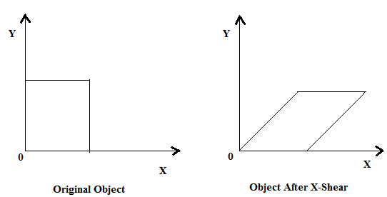
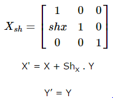
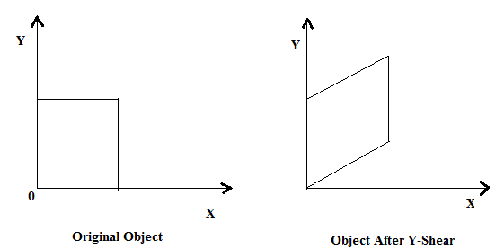
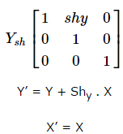
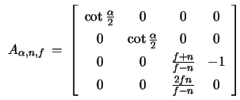

Shearing:
A transformation that slants the shape of an object is called the shear transformation. There are two shear transformations X-Shear and Y-Shear.
One shifts X coordinates values and other shifts Y coordinate values. However; in both the cases only one coordinate changes its coordinates and other preserves its values.
Shearing is also termed as Skewing.
X-Shear:
The X-Shear preserves the Y coordinate and changes are made to X coordinates,
which causes the vertical lines to tilt right or left as shown in below figure.

The transformation matrix for X-Shear can be represented as:

Y-Shear:
The Y-Shear preserves the X coordinates and changes the Y coordinates which causes the horizontal lines to transform into lines which slopes up or down as shown in the following figure.

The Y-Shear can be represented in matrix from as:

Viewing Transformation:
One of the most important operations in rendering is the projection of a a three-dimensional scene onto a two-dimensional screen from an arbitrary camera position. A fundamental part of this operation is the specification of a viewing transformation, a 4×44×4 matrix that transforms a region of space into image space.
- The camera coordinate system is a coordinate system with the camera at the origin, looking out over the positive z axis.
- It is, essentially, the scene from the camera's point of view. The raster coordinate system is the space of the pixels on the monitor.
- Connecting these two coordinate systems there is a special coordinate system known as the screen coordinate system.
- The screen coordinate system is, conceptually, the same as the film plane of a camera.
- It is usually best to consider both the screen coordinate system and the raster coordinate system to be two-dimensional, even though we know that RenderMan can output depth information.
- The RenderMan Interface Specification has a rather complex viewing transformation. The interface has many calls which each set-up a small piece of the transformation.
- Each of these values has a “reasonable” default, which is to say that if you don't set it, it will default to something which is probably appropriate, given the values that you have already set.
- The viewing transformation has lots of controls, but typically they are not all used together. Rather, a couple important controls are set and the rest are let to default to their “logical” values.
- The viewing transformation can be broken down into two pieces, the camera-to-screen projection and the screen-to-raster projection.
- The camera-to-screen projection flattens the 3-D world onto the 2-D screen.
- The screen-to-raster projection maps every point on the screen onto some output pixel.
The Viewing Transformation Matrix:
Given the specification of the parameters (α,n,f), we define a transformation that can be applied to all elements of a scene and takes the truncated viewing volume (bounded by the viewing pyramid and the planes z=-n and z=−f) to the cube -1≤u,v,w. This transformation is given by

The transformation Aα,n,f is commonly referred to as the viewing transformation